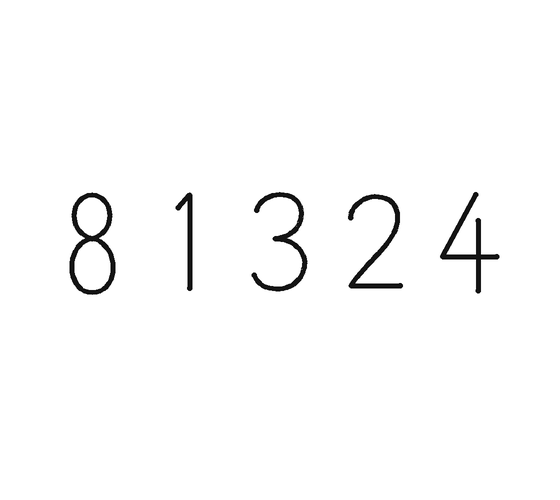

SketchMind: Toward Executable Pen-Based Sketching for Constructing Sorting Algorithms


We often learn algorithms by tracing them on paper.
Supporting algorithmic reasoning through executable sketching
Every pen stroke runs as an operation.
Demo: Alice traces Bubble Sort on [3, 1, 7, 4].
Back in SketchMind: Alice’s array [3, 1, 7, 4], about to be sketched.
Data pen: she writes 3 1 7 4.
Scan: the sketch is recognized as an array.
Compare 3 and 1 → is_bigger(3, 1) = True.
Swap them: the numbers move; nothing is redrawn.
Compare 3 and 7 (False), then 7 and 4 (True).
Swap 7 and 4 → [1, 3, 4, 7]. Looks sorted.
Merge steps into your own reusable pens.
Demo: Alice merges compare and swap into a new pen.
Back to her steps: compare, swap, compare, compare, swap.
Drop swap into the True branch of is_bigger → a Compare & Swap pen; the whole pass folds into compare_and_swap blocks.
One trace, three levels of abstraction.
Demo: Alice views her trace as values, indices, and parameters.
value: compare_and_swap(3, 1)
index: compare_and_swap(a[0], a[1]), positions in the array
param: compare_and_swap(a[i], a[i+1]), the pattern
SketchMind looks for an input where her plan fails.
Demo: SketchMind finds an input where her plan fails.
One pass: [3, 1, 7, 4] → [1, 3, 4, 7]. Done?
Done → SMT: “what if we change 4 to 2?”
Her own steps on [3, 1, 7, 2] → [1, 3, 2, 7]: not fully sorted.
Demo: Alice fixes her plan with a Bubble up loop.
Three compare_and_swap blocks on [3, 1, 7, 2].
Drag them together → bubble_up, for i = 0 to 2: a new Bubble up pen.
Bubble up on [1, 3, 2] → [1, 2, 3, 7].
And on [1, 2].
Done → “All comparisons are correct. Your algorithm is verified!”
How SketchMind finds the counterexample.
a0 > a1a0 ≤ a2a2 > a3a1 ≤ a0→a1 > a0✗ clashes with a0 > a1a0 ≤ a3→a0 > a3✓ Bubble Sort must swap here, in pass 2a1 ≤ a0→a1 > a0✗ clashes with a0 > a1(declare-const a0 a1 a2 a3 Int)unknowns(assert (<= 1 a0 99)) … (distinct a0 a1 a2 a3)valid, distinct(assert (> a0 a1))keep · pass 1(assert (<= a0 a2))(assert (> a2 a3))(assert (> a0 a3))flip · pass 2(minimize (+ (ite (= a0 3) 0 1) …))fewest changed values(minimize (+ (abs (- a0 3)) …))then L1 distance(minimize (+ a0 a1 a2 a3))then smaller sum(check-sat) (get-model)runThree layers, one loop.
Demo: Alice sketches Pancake Sort with new pens.
Customized primitives: find_max and flip.
find_max on [2, 4, 1, 3], flip the 4 to the front, flip it to the end.
The steps merge into flip_max_to_front / flip_max_to_end pens.
Applied round by round → [1, 2, 3, 4].
Merged into a pancake_sort pen. Done → array sorted.
A preliminary study with learners and instructors.
Feature ratings 7-point Likert, N = 20, self-reported
usability 5.85 (SD 0.93)
What participants told us.

flip all 5: the max goes to the end“Without animation I could not understand this algorithm.”P7
No longer having to “figure out how to flip the array in my mind.”P9
A pen is “a function” that can be “used directly” or “defined”.P4, P7
Merging produces behavior similar to “If-Else”.P13
3 1 7 4indexa0 a1 a2 a3parametera[i], a[i+1]Transforms an “instantiated exercise into an abstract learning experience”.P8
Value is most intuitive, while parameter view is “more like coding”.P10
[3,1,4,2]✓ sorted↓[3,2,4,1]✗ not sortedP11 finds the missing final comparisonOtherwise they might have wrongly believed “all two rounds would be fine”.P12
It “encourages you to think in the opposite direction.”P5
What instructors told us.
“Very good for introductory learning.” E5
“Doing it yourself helps more than watching.” E4
Dynamic visualization, such as “seeing numbers move.” E2
Animation lets learners “see the inner working of the algorithm.” E3
From “this array” to “arrays in general.” E2
Composing pens makes repetition and generalization visible in ways “static paper rarely does.” E1 · E3
Schemas that can later “transfer to pseudocode or code.” E2
Discussion

Supporting Algorithmic Reasoning through Executable Sketching


 SketchMindUIST 2026
SketchMindUIST 2026